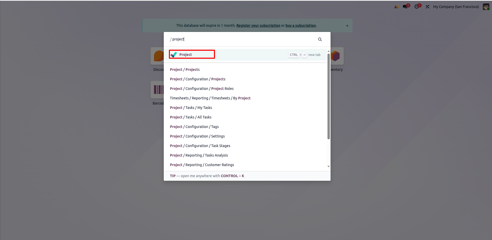
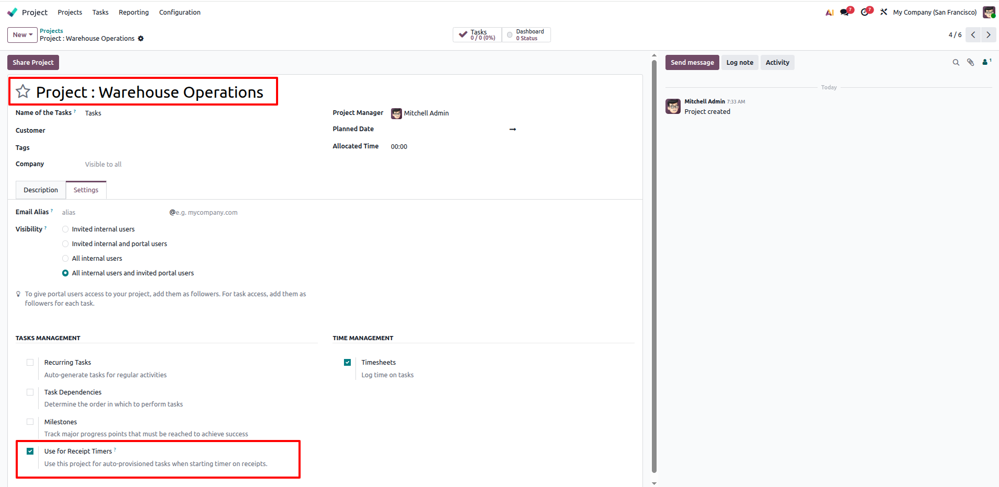
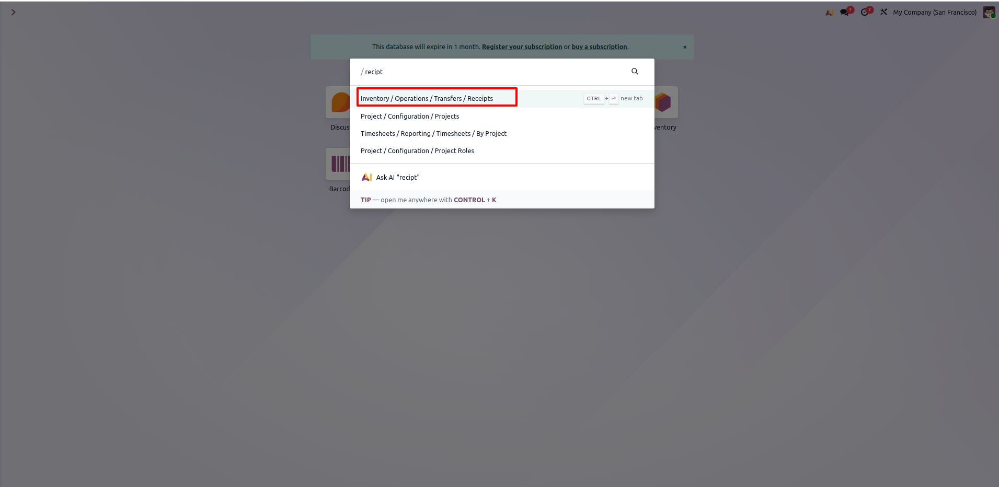
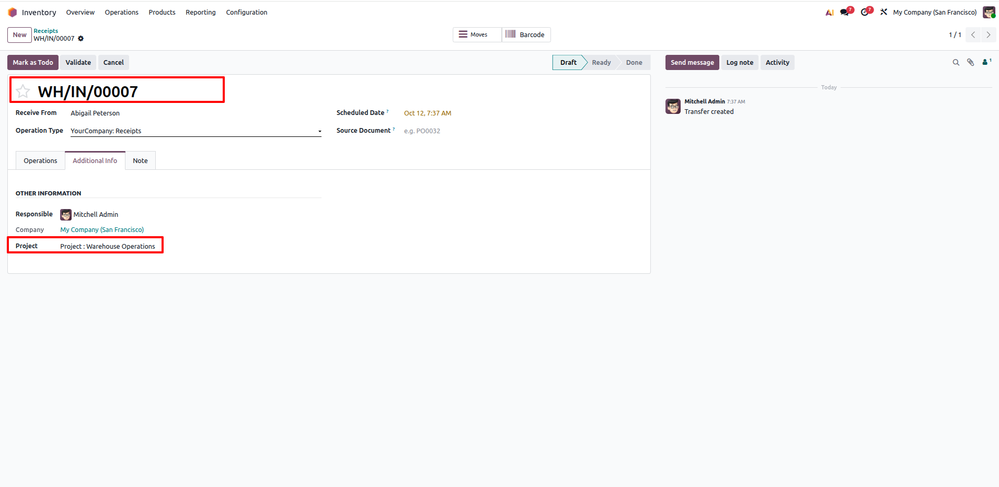
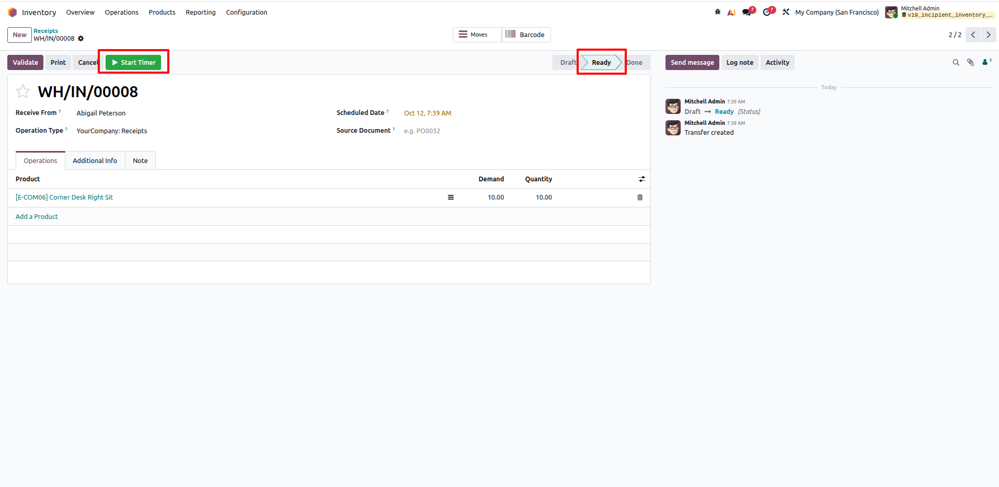
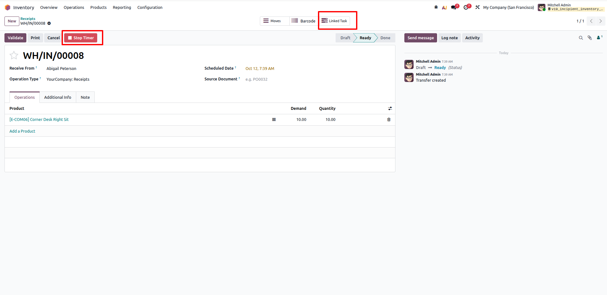
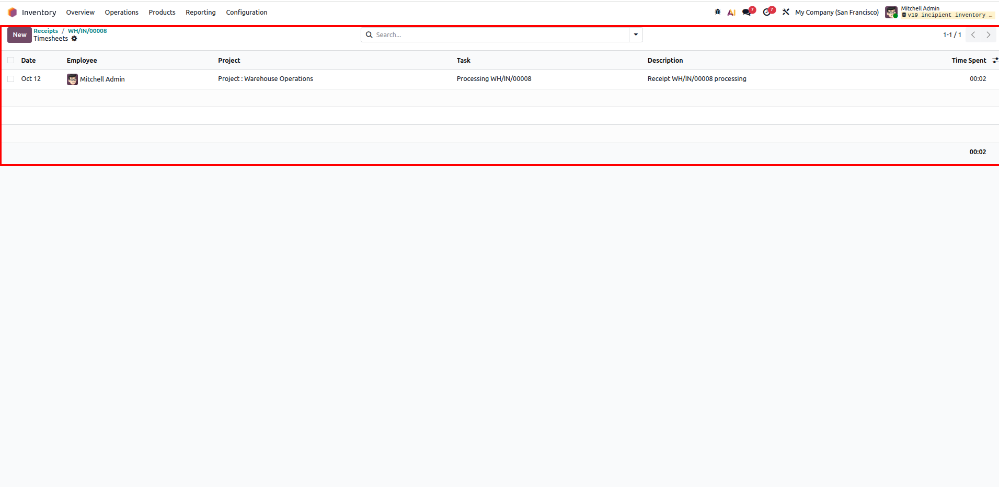

Inventory Receipt Timer
Incipient Inventory & Timesheet SuiteInventory Receipt Timer & Timesheet Integration
Seamlessly track labor hours on incoming warehouse shipments with real-time Start and Stop timers, auto-provisioning linked project tasks on first use, preventing simultaneous timers, and logging precise duration directly into employee timesheets.
Need Setup Assistance?
Free pre-sales consultation and lifetime support for every installation.
Contact Technical SupportPrecision Warehouse Labor & Time Tracking
Eliminate estimated receiving times with 1-click live timers and automated timesheets
Live Receipt Timer
Start & Stop ControlLaunch and stop real-time receiving timers directly from incoming stock receipt forms. Dynamic buttons adapt instantly based on user activity.
Auto-Provisioned Tasks
Project SyncStarting a timer automatically creates and links a project task under your designated Receipt Timer Project, capturing partner and company details seamlessly.
Timesheet Logging & Conflict Guard
Single Active TimerAutomatically posts accurate timesheet lines to the employee account upon stopping, while strictly preventing overlapping timers per user or picking.
The Warehouse Operational Transformation
How Inventory Receipt Timer bridges the gap between warehouse receiving operations and labor cost accounting
Default Receiving Inefficiency
- ✕ No built-in timer mechanism on stock receipts; warehouse labor hours remain untracked or roughly guessed.
- ✕ Warehouse operators must manually switch to Project or Timesheet apps, manually searching and recording time entries.
- ✕ Multiple users can unknowingly log conflicting hours or forget running tasks, creating inaccurate landed/labor cost records.
Automated Receipt Tracking
- ✓ One-click Start & Stop timer right on the incoming shipment header with automatic duration calculation in hours.
- ✓ Auto-provisions a linked project task on first use under your receipt project, linking partner and company automatically.
- ✓ Enforces one active timer per user and locks concurrent processing conflicts, ensuring clean timesheet accounting.
Comprehensive Feature Suite
12 Core capabilities engineered for seamless warehouse time-tracking and timesheet integration
1-Click Start/Stop Timer
Start and stop timers directly from incoming receipt headers with dynamic visibility based on current state and user ownership.
Auto-Provisioned Tasks
Automatically creates a dedicated project task titled "Processing [Receipt Name]" when starting a timer on a receipt for the first time.
Receipt Project Flag
Designate any standard project with the "Use for Receipt Timers" checkbox to route all receiving tasks to the appropriate team workspace.
Single Active Timer Enforcement
Prevents users from running multiple timers simultaneously across different receipts, preventing inflated or ghost labor hours.
Concurrency Conflict Guard
Warns and prevents another warehouse team member from starting a timer on a receipt that is actively being processed by a colleague.
Direct Timesheet Writing
Automatically computes duration in hours and logs a timesheet entry (`account.analytic.line`) linked to the user's employee record.
Linked Task Smart Button
Convenient stat button on the receipt form opens the auto-provisioned project task for stage changes or additional notes.
Timesheet Counter Stat Button
Displays a live counter of logged timesheets on the picking form, offering 1-click drill-down to all logged labor records.
Multi-Company Isolation
Respects company configurations so receipt tasks and timesheet records match the operating company of the receipt.
Native Stock Integration
Buttons seamlessly show only on incoming shipments in actionable operational states (excluding draft, done, and cancel states).
Edition Compatibility
100% compatible with Odoo Community Edition, Enterprise Edition, and Odoo.sh cloud hosting environments.
Clean ORM Architecture
Pure Odoo framework extension requiring zero external Python libraries or third-party background services.
Step-by-Step Visual Walkthrough
How Inventory Receipt Timer operates in Odoo
Access Project Application
Open the Project module from the Odoo main menu or command search bar.
Quickly navigate to Project app using the search palette (/project) to access and configure operational projects for warehouse receiving tasks.

Configure Receipt Timer Project
Enable the "Use for Receipt Timers" configuration option in Project Settings.
Open your designated project (e.g., Project : Warehouse Operations) and check the "Use for Receipt Timers" option under the Settings tab. This designates where automatic tasks will be generated when starting timers.

Navigate to Incoming Receipts
Access incoming warehouse receipts via the Inventory menu or quick search.
Go to Inventory > Operations > Transfers > Receipts (or search /receipt) to view the list of incoming shipments awaiting warehouse processing and unloading.

View Receipt & Linked Project
Open an incoming receipt to view shipment details and designated project information.
Inspect the incoming receipt (e.g., WH/IN/00007). Under the Additional Info tab, verify the assigned project (Project : Warehouse Operations) configured for logging receipt operations.

Start Timer on Ready Receipt
Click the green "Start Timer" button in the receipt header when ready to process.
When a receipt reaches the Ready state, the green Start Timer button appears in the action bar. Warehouse operators can click it to instantly start tracking labor time for unloading and inspection.

Active Timer & Auto-Provisioned Task
Timer runs live with a "Stop Timer" button, while auto-provisioning a linked project task.
Once started, the header button transforms into a red Stop Timer button, and a Linked Task smart button is automatically created and attached to the receipt under the designated project.

Stop Timer & Automatic Timesheet Entry
Stop the timer upon completion to post recorded hours directly into employee timesheets.
Clicking Stop Timer calculates the elapsed time and automatically generates a timesheet line with employee, project, task, and duration details. Click the Timesheets smart button on the receipt to review all logged entries.

Frequently Asked Questions
Click any question below to expand or collapse details